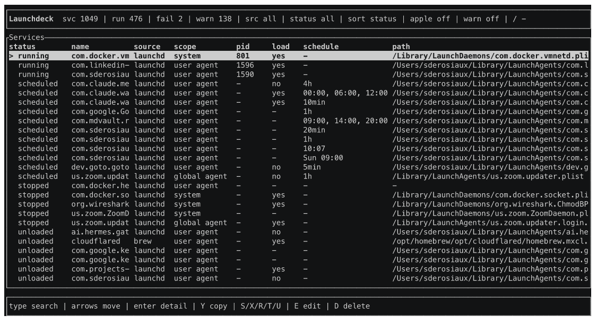

Every background job on your Mac,
in one place.
Launchdeck gives launchd jobs and Homebrew services one fast, readable
control surface: status, schedules, plist metadata, logs and guarded actions — without
spelunking through launchctl, brew services and plist files
scattered across four directories.

macOS service management is fragmented.
Nothing here is broken, exactly. It is just spread across four tools that do not talk to each other, and two of the states that matter most look identical from the outside.
Dense output, no configuration
launchctl print knows runtime state, but it is domain-oriented and says
nothing about the plist that defines the job — no schedule, no command, no log
paths.
Stopped and scheduled look the same
A job with no running process may be genuinely idle — or waiting on a
StartInterval to fire at 03:00. Same output. Launchdeck separates them,
because the difference decides whether you need to act.
Four directories
~/Library/LaunchAgents, /Library/LaunchAgents,
/Library/LaunchDaemons and the Apple-managed trees under
/System/Library. Launchdeck reads all of them and parses what is
inside.
Only half the world
Convenient, but blind to everything that is not a formula. Launchdeck shows both, and manages each through the tool that owns it — so it never fights Homebrew.
Killing ≠ unloading
kill a process and launchd may bring it straight back. Stopping a
scheduled job uses launchctl bootout so it is actually unloaded and
will not wake up on its next tick.
Seven states, told apart.
Most of the value is here. These states are collapsed or invisible in
launchctl output, and telling them apart is the difference between "this is
fine" and "this has been silently failing for a week".
launchd has an active PID for the job.
Loaded, no PID right now, but a schedule is configured. It will wake up on its own.
Loaded, no PID, and no known schedule. Genuinely idle.
The plist exists on disk, but the job is not loaded into launchd at all.
launchd marks the job disabled in its domain. It will not start until enabled.
launchd or Homebrew reported a non-zero exit or an error state.
The current state could not be classified. Shown as such rather than guessed.
5min, 1h, 00:00, Sun 09:00 — parsed
from StartInterval and StartCalendarInterval, not shown as raw
plist dictionaries.
Who installed this, and what will it cost to change it?
Two questions launchctl cannot answer, and both decide whether your change
survives the week.
Provenance
Editing a plist that Homebrew owns lasts until the next
brew upgrade. Editing one that nix-darwin owns lasts until the next
switch. Launchdeck classifies every job from signals it already has —
no extra subprocess — and shows the evidence behind the guess.
brew services
launchctl
mise.toml, then re-run the bootstrap
Privileges, per action
launchd scope and file ownership are independent. An agent in
/Library/LaunchAgents is root-owned on disk but runs in
your gui/<uid> domain — so starting it needs nothing,
while deleting its plist needs root. Launchdeck decides per action instead of
blocking the whole service.
RunAtLoadrequired
When root is required, the confirmation prompt shows the command
including the sudo prefix, then Launchdeck leaves the TUI so
sudo can prompt on the real terminal. The command runs as an argument
list, never through a shell, and your password never passes through Launchdeck.
Built for real developer machines.
One unified list
launchd jobs and Homebrew services side by side, enriched with parsed plist
configuration and runtime state from launchctl.
Type-to-search and filters
Filter by source and status, show warnings only, toggle Apple/system services, and sort by name, status, source or health.
Logs where you decide
Scrollable stdout and stderr from the paths the plist
declares, plus a unified os_log stream for the job.
Guarded actions
Every action shows the exact command and waits for confirmation.
/System/Library is inspect-only; destructive actions always confirm.
Create agents without XML
A form for the common plist fields — arguments, working directory, env, log paths,
RunAtLoad, intervals — validated and linted before it is written.
Background refresh
The inventory refreshes without blocking the UI, and keeps your selection stable by service identity rather than by row index.
Running in under a minute.
Install
Via Homebrew, which is the shortest path and keeps it updated:
brew install sderosiaux/tap/launchdeck
Without Homebrew, the installer script writes to ~/.local/bin:
curl -fsSL https://raw.githubusercontent.com/sderosiaux/launchdeck/main/scripts/install.sh | sh
Or from source, if you have a Rust toolchain:
cargo install launchdeck. Prebuilt archives for Apple Silicon and
Intel are on the
releases page.
Look before you touch
Launchdeck opens on the services you are most likely to care about, hiding the Apple/system noise until you ask for it with A. Nothing is modified until you confirm an action.
launchdeck
For scripts and pipes, the same inventory without the TUI:
launchdeck list, or launchdeck list --all to include
Apple and system services.
Act, with the command in front of you
Press S, X or R and Launchdeck shows you the
exact launchctl or brew services invocation it is about
to run. Press y to confirm, n to walk away. If the action
needs root, the sudo prefix is right there in the prompt.
Questions worth asking.
How is this different from just using launchctl?
launchctl knows runtime state, but its output is dense, domain-oriented
and says nothing about the plist that defines the job. Launchdeck joins
launchctl state, Homebrew metadata and parsed plist configuration into
one list, so the schedule, the command, the log paths and the runtime status are all
in front of you at once — and it still runs launchctl underneath, so
there is no second source of truth.
Does Launchdeck need root?
/Library/LaunchAgents needs nothing because it
runs in your own gui domain; deleting that same root-owned plist needs
root. When root is required, the command is prefixed with sudo and
shown in full, then Launchdeck leaves the TUI so sudo prompts on the
real terminal. The password never passes through Launchdeck, and commands are always
executed as an argument list rather than a shell string.
Will it change anything without asking?
/System/Library are inspect-only, vendor and
runtime-only jobs are blocked unless they can be classified safely, and destructive
actions like deleting a plist always confirm.
What exactly is the "scheduled" state?
StartInterval or StartCalendarInterval configured. In
launchctl output it is indistinguishable from a stopped job — which is
why a service you assume is dead can wake up at 03:00. Stopping a scheduled job uses
launchctl bootout, so it is genuinely unloaded rather than merely
killed.
Do I need Homebrew?
brew services entries appear in the
same list and are managed through brew so Launchdeck never fights the
tool that owns them. Without it, you simply get the launchd side of the world.
Is it safe to run on a work machine?
launchctl, brew, plutil and log,
makes no network calls, and collects no telemetry. It is dual-licensed MIT or
Apache-2.0 and the source is on GitHub — the confirmation prompt exists precisely so
you never have to take its word for what it is about to do.
Linux or Windows?
launchd, which is macOS-specific. There
is no meaningful way to port the model to systemd without it becoming a different
tool.